An AI concept that turns a camera roll into a detailed, first-person account of a trip — for the traveler who took hundreds of photos and wrote down nothing.
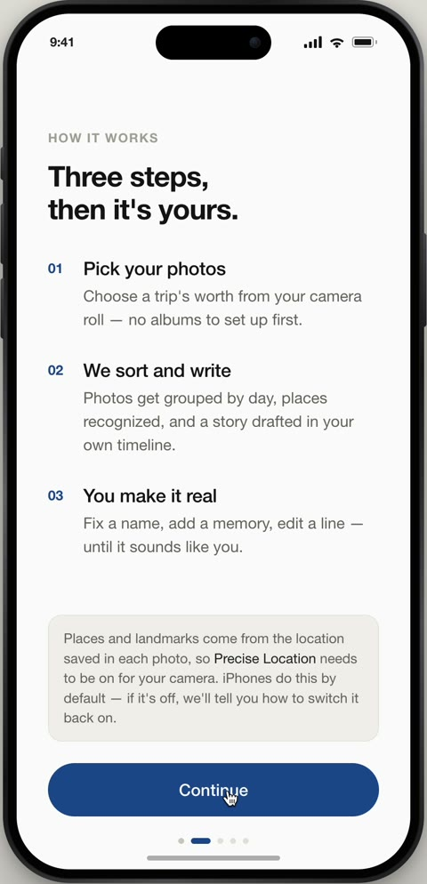
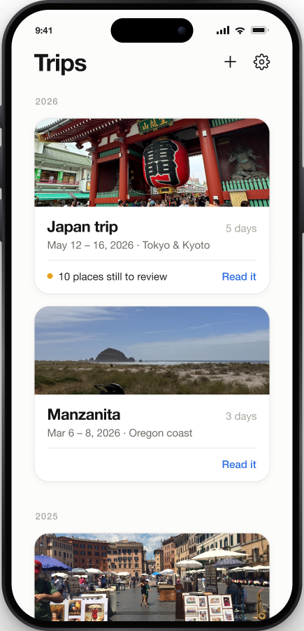
01 — The Problem
Keepsake started with a phone call. My parents had just gotten back from two weeks in Prague and Austria — they take two or three big trips a year and love sharing the photos with our extended family — but my mom couldn't remember which city they'd been in on which day, or the names of half the landmarks they'd stood in front of. They'd already tried a handful of apps on the App Store. None of them fit.
My own last few years held the same blind spot — restaurants I can't name, small towns I can't place, a little shop I loved that I could never point a friend back to. The details blur within weeks, and the itinerary is always messy, half-followed, impossible to find. Every tool that promises to help asks for the effort at the wrong moment: while you're traveling, not after.
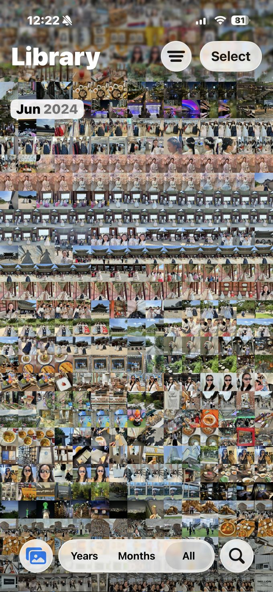
The apps my mom tried weren't bad — they were built for a different moment. Scanning the "AI + travel memories" space showed why: it's crowded, but every serious player shares one requirement Keepsake drops.
| Approach | Example | What it asks of you |
|---|---|---|
| GPS live tracking | Polarsteps | The app running live, all trip |
| AI journaling | Day One AI | Prompts answered as you go |
| Photo + reflection | A wave of newer apps | Opened and used during the trip |
| Camera roll, after the fact | Keepsake | Nothing during the trip ← |
The differentiation that survived scrutiny wasn't the AI — it was the audience: Keepsake is built for someone who did nothing during the trip. That single distinction became the filter I ran every later decision through.
Primarily frequent travelers — people who take enough trips to start losing track of the individual ones — though anyone who travels can use Keepsake as a running log of everywhere they've been. Frequent travel is simply where the pain is sharpest.
02 — The Solution
The result is a keepsake you can read back — a day-by-day, first-person account of where you went, what you ate, and what you saw. It's built from the photos themselves: timestamps order the days, EXIF location data places each one, and image recognition reads what's in the frame — a temple, a bowl of ramen, a train platform — so the AI can name places and describe meals without you labeling a thing. Optional context like a calendar or itinerary can sharpen names and fill gaps, but the photos lead. Everything after that first draft is about making it accurate, and making it yours. Here's the full arc, from empty app to a trip worth sharing.
Onboarding opens with expectations, not a form — three plain steps before it asks for anything. Photo access comes with a promise: the photos are read for your story only, never posted or shared.
Starting a trip means picking one, not building one — Keepsake has already grouped your camera roll into trips by date and place. Optional context like a calendar or itinerary is offered but always skippable, and anything it adds you can toggle off, because the photos stay the source of truth.
Reviewing is just reading — there's no separate review queue. Unsure names carry a dotted underline that opens a photo-backed “Fix this place,” usually a one-tap save. You can also rewrite a whole sentence, so the story ends up sounding like you, not a model.
Reflections are the one place feeling enters the story — so they live in their own card at the end of each day, never woven into the factual narrative. They're opt-in prompts answered in your own words.
Once every day is reviewed, “Generate trip memory” stitches them into one continuous, day-by-day read — the keepsake itself. It flows morning to night with your reflections folded in, and closes on a Wrapped-style card that reads your travel style from how you actually moved.
Sharing stays low-stakes on both ends. You choose what goes in the link — reflections stay private unless you turn them on — then send it like any other link. The recipient opens a plain, view-only web page in their browser: no app, no account, just the whole trip.
03 — Input Philosophy
The founding rule: nothing should ever require typing structured information. Photos are the only required input — everything else is a connect, forward, or paste, offered only after the first draft exists, so Keepsake proves its worth before asking for more.
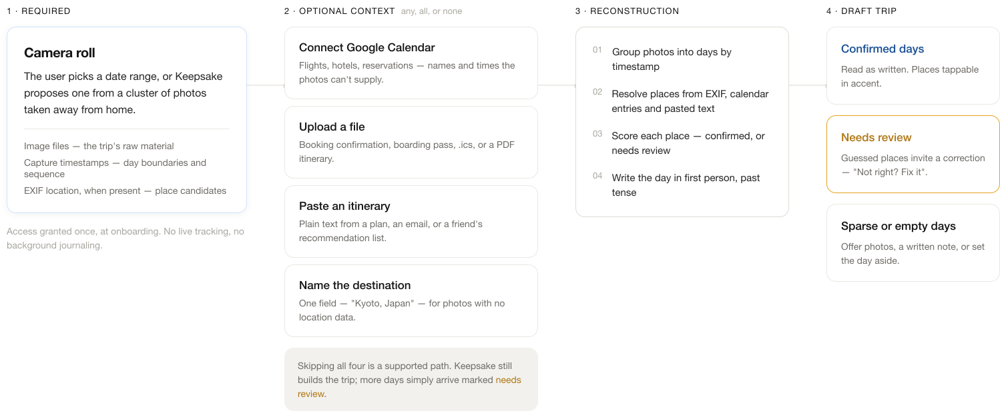
The full input model — one required source, up to four optional ones (any, all, or none), and a reconstruction step that grades every place as confirmed or needs review before the day is written. Skipping all four optional sources is a supported path; more days simply arrive marked for review.
An early feature let users forward booking-confirmation emails for Keepsake to parse automatically. It was fully scoped — then cut. Its one unique contribution, flight details invisible to photos, could be recovered far more cheaply from a screenshot people already take, folded into the existing upload-and-paste flow rather than standing up new email-parsing infrastructure. A clean case of killing a feature once it couldn't justify its cost.
04 — Photo Curation
A single day can be hundreds of photos, and dropping all of them into the recap would bury the story. So the AI curates a representative few for each day — and how it chooses matters as much as how it writes.
A single stop at Meiji Jingu produced fourteen near-overlapping photos — burst shots of the same gate, the same plaque wall, the same pose. Here's what that looks like end to end: the set the AI started with, the five it kept, and how they land in the app.
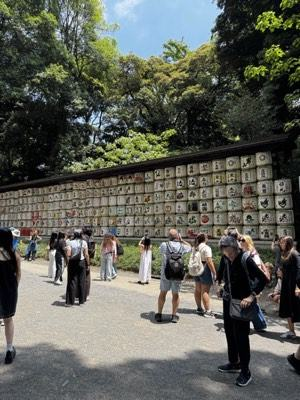
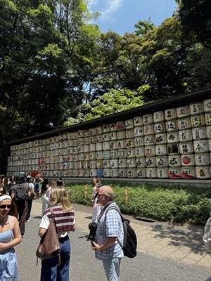
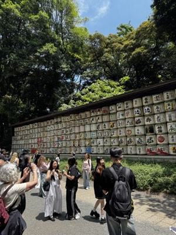
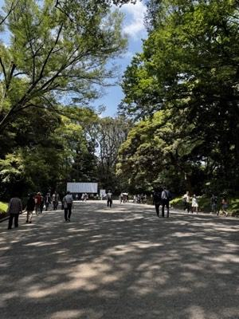
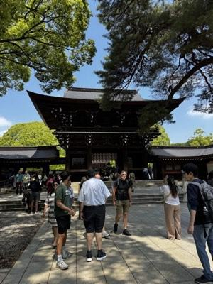
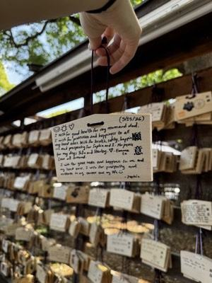
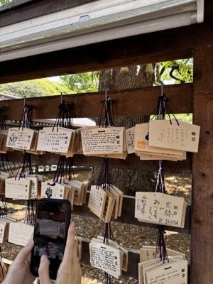
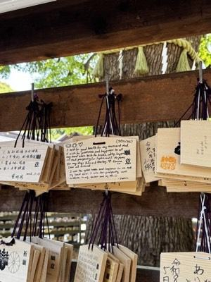
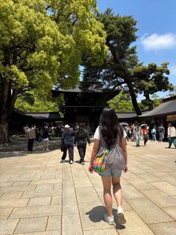
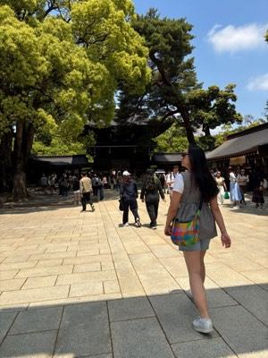
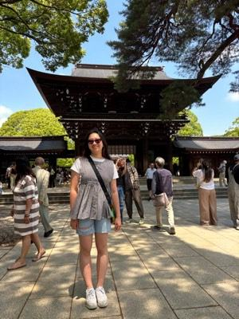
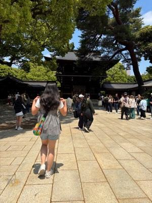
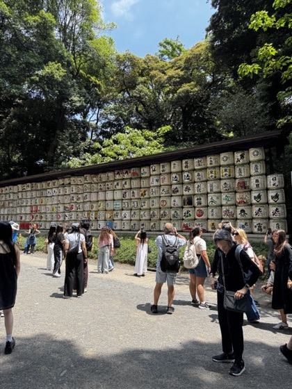
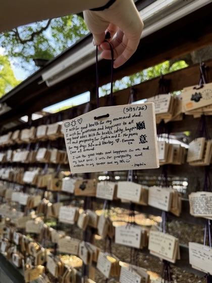
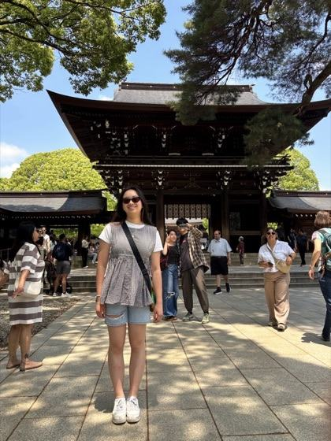
And nothing is ever silently dropped. The curated set is only the default view; an explicit “see all” always expands to every photo from that stop. Curation is a suggestion, not a gate.
05 — The Narrative
The recap began as cards — one per stop, with a confidence badge and Confirm / Edit buttons. It read like a queue to clear, so I rebuilt it into flowing, first-person prose: a keepsake to read back, not a task to process.
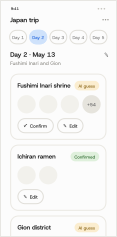
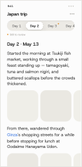
Once it’s prose, the text itself is the interface. Two things you can do to any day:
Correct a name. The AI infers places from photos and location data and won’t always get them right. Anything it’s unsure of carries a dotted underline; tapping it opens an in-place “Fix this place” with likely suggestions — usually a one-tap fix, and reading a day without touching it quietly confirms it.
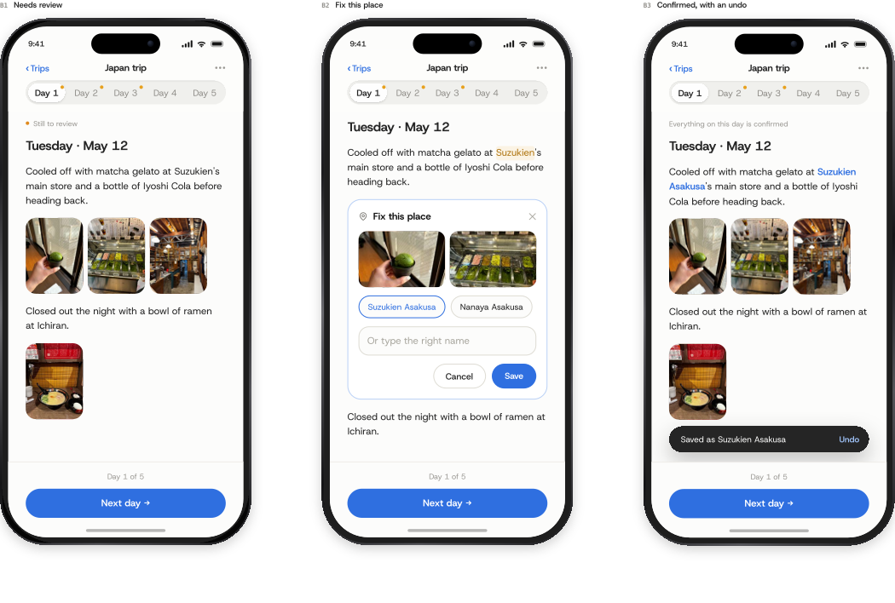
Tap for context. Only recognizable places — a famous shrine, a well-known district — render in accent; an everyday spot stays plain text. Tapping one slides a short context card in under the sentence, and a second tap moves it along — there when you’re curious, gone when you’re not.
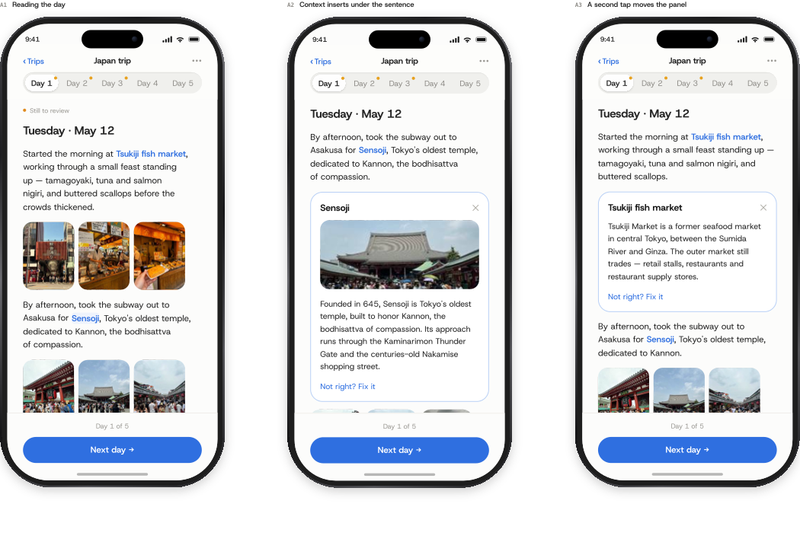
06 — Trust & Truth
Keepsake writes in the first person, so I had to decide what it can claim on your behalf. The line runs between fact and feeling.
Sourced from photos, GPS, timestamps, and receipts.
Never invented — it appears only when you wrote or said it.
Even the facts have a ceiling. Landmark history is the one place the AI reaches past your photos — so it's capped at ~two sentences from a structured source, never free-generated. When unsure, it says less.
The firmest line is about people. Face recognition and tagging were ruled out entirely — no biometric data, on travelers or bystanders, without consent. Who you were with is something you add yourself.
07 — Capturing Feeling
The most-revised part of the design, around one question — where does subjective content live? It took three tries (below) to land on a component of its own, plus a fix to how it asked: answered prompts became pull-quotes, so empty fields never nag.
Weaving reflection prompts inline, beside the paragraphs they related to, felt contextual — but scattered through the recap they were easy to skip and hard to find later. I’d already built it before reversing course: pulling every reflection into a single end-of-day card makes the day’s most memorable moments easy to revisit, and grouping them feels far more intentional than prompts sprinkled through the day.
08 — Edit & Read Modes
“Generate trip memory” isn't an export — it's a mode switch on the same live, still-editable data. Edit mode is built for fixing: paginated by day, with a review count and tap-to-fix cues. Read mode is built for reading: one continuous scroll with a numbered day index, closing on the Wrapped-style stat card. You can move between them as often as you like — nothing is ever locked.
09 — Navigation
The whole app has one root: Home, a library of trip cards, and the only screen you ever return to. There's no tab bar — with a single content type, a second root would just invent a destination that doesn't exist. Tapping a trip pushes one full-screen view, and everything else — switching days, toggling modes, correcting, reflecting — happens inside it through existing components, never another navigation level. The simplicity is earned by removing places to go, not hiding them.
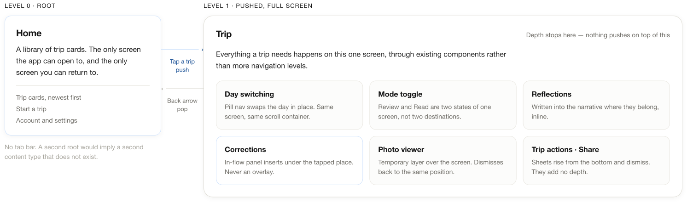
10 — Sharing
The shared page isn't just in-app read mode behind a link. A first-time visitor needs context the owner never did, so the web version opens with a cover and a byline, and a day index that's labeled, not just numbered — “Meiji Jingu, then Kyoto,” not “Day 3.” It closes on a quiet “made with Keepsake.”
11 — Success & Next
It's a concept — nothing has shipped, so there are no numbers to point to yet. But a design is only as strong as the bet behind it, so here's how I'd test this one, and what I'd resolve next.
12 — Reflections
A self-initiated concept meant the constraints were mine to set — which made the trade-offs the most useful part. Three things I'm carrying into the next project: